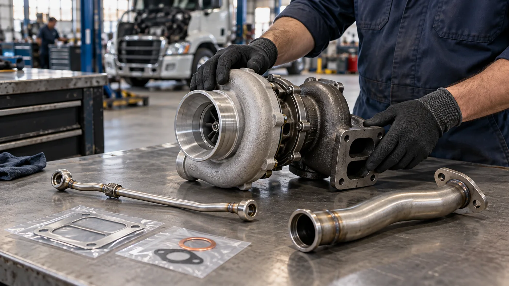

Un turbo nuevo puede dañarse en minutos si recibe aceite sucio, poco caudal de lubricación o fragmentos que quedaron en la admisión. Por eso, cambiar el turbocompresor de un camión no empieza aflojando sus tornillos: empieza averiguando por qué falló el anterior. Esta guía resume el orden de trabajo para un taller de motores diésel pesados; las instrucciones del fabricante del motor y del turbo específico siempre tienen prioridad.
1. Confirmá que el problema sea realmente el turbo
Pérdida de potencia, humo, ruido o consumo de aceite no demuestran por sí solos que haya que sustituirlo. Garrett recomienda revisar filtro de aire, ductos, intercooler, escape, inyección, lubricación y presión del cárter antes de condenar el turbocompresor. Una fuga en una manguera de sobrealimentación puede imitar una avería del turbo.
Registrá códigos de falla, presión de sobrealimentación y antecedentes de mantenimiento con el equipo de diagnóstico indicado para ese camión. Si aparecen fragmentos de las ruedas, aceite en cantidad anormal o señales de falta de lubricación, no vuelvas a arrancar hasta investigar dónde quedaron los restos y qué causó el daño. La guía de diagnóstico de Garrett exige hacer las comprobaciones físicas con el motor apagado y frío.
2. Identificá el repuesto exacto y prepará el trabajo
Usá número de chasis, modelo y serie del motor, referencia del turbo retirado y, cuando corresponda, datos de calibración. Dos camiones con el mismo nombre comercial pueden llevar turbinas, caracolas o actuadores diferentes. Antes de abrir el vehículo, compará conexiones de aceite, agua si las hay, admisión, escape y mando del actuador con la pieza de reemplazo.
Prepará juntas y elementos de fijación especificados, aceite y filtros conforme al manual, protección para las bocas abiertas y herramientas adecuadas para sostener el conjunto. Dejando enfriar el motor, inmovilizá el vehículo y seguí el procedimiento de aislamiento eléctrico y acceso del fabricante. El turbo y el múltiple de escape pueden conservar calor suficiente para causar quemaduras; algunas unidades son pesadas y requieren ayuda para manipularlas.

3. Retirá el conjunto sin contaminar los circuitos
La secuencia exacta cambia según el motor. Como regla de trabajo, documentá fotos y posición de ductos, sensores, tuberías y soportes antes de separarlos. Desmontá protecciones y conexiones necesarias siguiendo el manual; si el turbo tiene refrigeración líquida, seguí también el procedimiento de drenaje y reposición del refrigerante. Evitá cargar peso sobre mangueras, caños o el actuador.
Tapá de inmediato las aberturas de aceite, admisión y escape para que no entren suciedad, herramientas ni restos de juntas. Inspeccioná la línea de alimentación y el retorno de aceite: obstrucciones, carbonización, dobleces o daño por calor pueden arruinar la unidad nueva. Garrett recomienda reemplazar la línea de entrada cuando exista duda sobre su estado. No reutilices una junta rota ni arrastres material viejo al conducto.
4. Corregí la causa antes de instalar
Si la rueda se dañó por un cuerpo extraño, buscá su origen y revisá filtro, caja de aire y ductos. Si hubo rotura del lado de compresión o expulsión de aceite, inspeccioná el intercooler y el recorrido de aire de carga de acuerdo con el fabricante: pueden retener fragmentos o aceite. Limpialos mediante el procedimiento aprobado o reemplazalos cuando corresponda. Una limpieza superficial de la boca no garantiza que el interior esté libre de residuos.
Si la avería apunta a lubricación, comprobá suministro, retorno, respiradero del cárter y condición del aceite. BorgWarner advierte que un retorno restringido o una presión excesiva en el cárter puede provocar fugas que se atribuyen equivocadamente al turbo. Un turbo nuevo instalado sobre el mismo problema puede repetir la falla.
5. Montá el turbo con juntas y pares correctos
Limpiá las caras de unión sin dejar residuos; retirá los tapones de transporte solo cuando estés listo para conectar cada circuito. Colocá juntas nuevas de la medida adecuada, alineadas con sus pasos de aceite, y apretá en el orden y al par que indique el manual del motor o del turbo. No hay un par universal válido para todos los camiones.
No uses sellador líquido en las conexiones de lubricación salvo indicación expresa del fabricante: material desprendido puede restringir el caudal. Conectá el retorno de aceite sin estrangulamientos y con su recorrido original. Después acoplá alimentación, escape y ductos de aire; verificá abrazaderas, soportes y protecciones térmicas. Si el equipo lleva actuador electrónico o geometría variable, no fuerces ni “calibres a ojo” la varilla: Garrett advierte que esos ajustes pueden dañar el conjunto.
6. Cebá el aceite antes del primer arranque
Con la línea de retorno instalada, Garrett indica introducir aceite de motor nuevo por la entrada de aceite del turbo antes de conectar la alimentación y girar suavemente la rueda de compresión a mano para comprobar que se mueva libremente. Cambiá aceite y filtros según la especificación del motor cuando la avería o el procedimiento lo requieran; sus residuos no deben volver al turbo nuevo.
Para la primera puesta en marcha, seguí el método del fabricante para generar presión de aceite sin que el motor arranque. La guía general de Garrett menciona hacer girar el motor de arranque 10 a 15 segundos en esa condición, pero el modo de inhibir el arranque y el tiempo admisible dependen del vehículo. No desconectes componentes al azar ni apliques este paso si el manual de servicio prescribe otro método.
7. Verificá en ralentí y antes de salir a la ruta
Arrancá solo cuando los circuitos estén cerrados y el nivel de aceite sea correcto. Garrett propone dejar el motor al ralentí unos 3 a 4 minutos mientras se comprueban fugas de aceite, aire y gases; después, detenerlo y volver a medir el nivel. Revisá también refrigerante si hubo que abrir ese circuito. Si aparece una fuga, una alarma de presión o un ruido anormal, apagá y corregí la causa: no intentes “probarlo” acelerando.
Con el sistema estanco, verificá diagnóstico, presión de sobrealimentación y funcionamiento del actuador conforme al manual. La prueba de conducción debe ser controlada y representativa de la carga del camión; no se devuelve el vehículo a servicio solo porque haya mantenido el ralentí. Registrá referencias instaladas, aceite, filtros, controles y cualquier anomalía para facilitar el próximo mantenimiento.
Errores que conviene evitar
- Cambiar el turbo sin diagnosticar: deja intacta la causa original.
- Montar con suciedad o restos de junta: puede dañar rodamientos y ruedas.
- Ignorar alimentación y retorno de aceite: compromete la lubricación o genera fugas.
- Arrancar en seco: expone al eje a desgaste inmediato.
- Forzar el actuador o inventar ajustes: altera una calibración de fábrica.
- Reutilizar conductos contaminados: devuelve aceite o fragmentos al motor.
En Zabala Repuestos, la consulta más útil incluye chasis, motor y número de parte, junto con una descripción de la falla encontrada. Esta guía ayuda a conversar con el taller y preparar el trabajo, pero no reemplaza el manual de reparación ni la intervención de personal capacitado. La instalación correcta es la que conserva la lubricación, elimina la causa de la avería y supera las verificaciones del vehículo concreto.